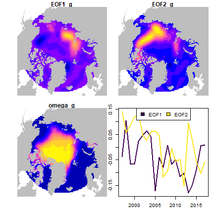

Empirical orthogonal functions
James T. Thorson
Source:vignettes/web_only/empirical_orthogonal_functions.Rmd
empirical_orthogonal_functions.RmdtinyVAST is an R package for fitting vector autoregressive spatio-temporal (VAST) models. We here explore the capacity to specify a generalized linear latent variable model that is configured to generalize an empirical orthogonal function analysis.
Empirical Orthogonal Function (EOF) analysis
To start, we reformat data on September Sea ice concentrations:
data( sea_ice )
library(sf)
library(rnaturalearth)
# project data
sf_ice = st_as_sf( sea_ice, coords = c("lon","lat") )
st_crs(sf_ice) = "+proj=longlat +datum=WGS84"
sf_ice = st_transform( sf_ice,
crs=st_crs("+proj=laea +lat_0=90 +lon_0=-30 +units=km") )
#
sf_pole = st_point( c(0,90) )
sf_pole = st_sfc( sf_pole, crs="+proj=longlat +datum=WGS84" )
sf_pole = st_transform( sf_pole, crs=st_crs(sf_ice) )
sf_pole = st_buffer( sf_pole, dist=3000 )
sf_ice = st_intersection( sf_ice, sf_pole )
#> Warning: attribute variables are assumed to be spatially constant throughout all geometries
Data = data.frame( st_drop_geometry(sf_ice),
st_coordinates(sf_ice),
var = "Ice" )Next, we construct the various inputs to tinyVAST
n_eof = 2
dsem = make_eof_ram( variables = "Ice",
times = sort(unique(Data[,'year'])),
n_eof = 2,
standard_deviations = 0 )
mesh = fm_mesh_2d( Data[,c('X','Y')], cutoff=1.5 )
# fit model
out = tinyVAST( dsem = dsem,
sem = "",
data = as.data.frame(Data),
formula = ice_concentration ~ 1,
spatial_graph = mesh,
space_column = c("X","Y"),
variable_column = "var",
time_column = "year",
distribution_column = "dist",
times = c(paste0("EOF_",seq_len(n_eof)), sort(unique(Data[,'year']))),
control = tinyVASTcontrol( profile="alpha_j",
gmrf_parameterization="projection") )Finally, we can extract, rotate, and plot the dominant modes of variability and associated spatial responses:
# Country shapefiles for plotting
sf_maps = ne_countries( return="sf", scale="medium", continent=c("north america","europe","asia") )
sf_maps = st_transform( sf_maps, crs=st_crs(sf_ice) )
sf_maps = st_union( sf_maps )
# Shapefile for water
sf_water = st_difference( st_as_sfc(st_bbox(sf_maps)), sf_maps )
# Create extrapolation grid
cellsize = 50
sf_grid = st_make_grid( sf_pole, cellsize=cellsize )
# Restrict to water
grid_i = st_intersects( sf_water, sf_grid )
sf_grid = sf_grid[ unique(unlist(grid_i)) ]
# Restrict to 3000 km from North Pole
grid_i = st_intersects( sf_pole, sf_grid )
sf_grid = sf_grid[ unique(unlist(grid_i)) ]
#
newdata = data.frame( st_coordinates(st_centroid(sf_grid)),
var = "Ice" )
# Extract loadings
L_tf = matrix( 0, nrow=length(unique(Data$year)), ncol=2,
dimnames=list(unique(Data$year),c("EOF_1","EOF_2")) )
L_tf[lower.tri(L_tf,diag=TRUE)] = out$opt$par[names(out$opt$par)=="beta_z"]
# Extract factor-responses
EOF1_g = predict( out, cbind(newdata, year="EOF_1"), what="pepsilon_g" )
EOF2_g = predict( out, cbind(newdata, year="EOF_2"), what="pepsilon_g" )
omega_g = predict( out, cbind(newdata, year="EOF_2"), what="pomega_g" )
# Rotate responses and loadings
rotated_results = rotate_pca( L_tf=L_tf, x_sf=cbind(EOF1_g,EOF2_g), order="decreasing" )
#> Warning in sqrt(Eigen$values): NaNs produced
EOF1_g = rotated_results$x_sf[,1]
EOF2_g = rotated_results$x_sf[,2]
L_tf = rotated_results$L_tf
# Plot on map
sf_plot = st_sf( sf_grid, "EOF1_g"=EOF1_g, "EOF2_g"=EOF2_g, "omega_g"=omega_g )
par(mfrow=c(2,2), oma=c(2,2,0,0) )
plot( sf_plot[,'EOF1_g'], reset=FALSE, key.pos=NULL, border=NA )
plot( st_geometry(sf_maps), add=TRUE, border=NA, col="grey" )
plot( sf_plot[,'EOF2_g'], reset=FALSE, key.pos=NULL, border=NA )
plot( st_geometry(sf_maps), add=TRUE, border=NA, col="grey" )
plot( sf_plot[,'omega_g'], reset=FALSE, key.pos=NULL, border=NA )
plot( st_geometry(sf_maps), add=TRUE, border=NA, col="grey" )
matplot( y=L_tf, x=unique(Data$year), type="l",
col=viridisLite::viridis(n_eof), lwd=2, lty="solid" )
legend( "top", ncol=n_eof, legend=paste0("EOF",1:n_eof),
fill=viridisLite::viridis(n_eof) )

plot of chunk EOF